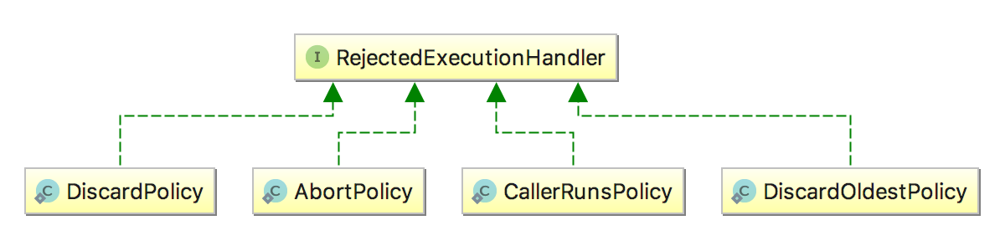

并发
JAVA线程可以分为六种状态

线程池

corePoolSize 核心线程数目
最多保留的线程数
maximumPoolSize 最大线程数目
核心线程 + 救急线程
keepAliveTime
针对救急线程
unit
针对救急线程
workQueue
阻塞队列
threadFactory
线程创建名称
handler
四种
ThreadPoolExecutor构造方法
Executors中创建线程池的快捷方法，实际上是调用了ThreadPoolExecutor的构造方法（定时任务使用的是ScheduledThreadPoolExecutor），该类构造方法参数列表如下：
// Java线程池的完整构造函数
public ThreadPoolExecutor(
int corePoolSize, // 线程池长期维持的线程数，即使线程处于Idle状态，也不会回收。
int maximumPoolSize, // 线程数的上限
long keepAliveTime, TimeUnit unit, // 超过corePoolSize的线程的idle时长，
// 超过这个时间，多余的线程会被回收。
BlockingQueue<Runnable> workQueue, // 任务的排队队列
ThreadFactory threadFactory, // 新线程的产生方式
RejectedExecutionHandler handler) // 拒绝策略
注解
corePoolSize和maximumPoolSize设置不当会影响效率，甚至耗尽线程；
workQueue设置不当容易导致OOM；
handler设置不当会导致提交任务时抛出异常。
线程池的工作顺序
corePoolSize -> 任务队列 -> maximumPoolSize -> 拒绝策略
注解
Runnable和Callable
可以向线程池提交的任务有两种：Runnable和Callable，二者的区别如下：
方法签名不同，void Runnable.run(),V Callable.call() throws Exception
是否允许有返回值，Callable允许有返回值
是否允许抛出异常，Callable允许抛出异常。
Callable是JDK1.5时加入的接口，作为Runnable的一种补充，允许有返回值，允许抛出异常。
提交任务的方式
是否关心返回结果?
是
Future<T> submit(Callable<T> task)否
void execute(Runnable command)否，虽然返回Future，但是其get()方法总是返回null
Future<?> submit(Runnable task)
如何正确使用线程池
避免使用无界队列
不要使用Executors.newXXXThreadPool()快捷方法创建线程池，因为这种方式会使用无界的任务队列，为避免OOM，我们应该使用ThreadPoolExecutor的构造方法手动指定队列的最大长度：
明确拒绝任务时的行为
 AbortPolicy
抛出RejectedExecutionException
DiscardPolicy
什么也不做，直接忽略
DiscardOldestPolicy
丢弃执行队列中最老的任务，尝试为当前提交的任务腾出位置
CallerRunsPolicy
直接由提交任务者执行这个任务
注解
线程池默认的拒绝行为是AbortPolicy，也就是抛出RejectedExecutionHandler异常，该异常是非受检异常，很容易忘记捕获。
如果不关心任务被拒绝的事件，可以将拒绝策略设置成DiscardPolicy，这样多余的任务会被忽略。
ExecutorService executorService = new ThreadPoolExecutor(2, 2, 0, TimeUnit.SECONDS, new ArrayBlockingQueue<>(512), new ThreadPoolExecutor.DiscardPolicy());// 指定拒绝策略
获取处理结果和异常
线程池的处理结果、以及处理过程中的异常都被包装到Future中，并在调用Future.get()方法时获取。
执行过程中的异常会被包装成ExecutionException，submit()方法本身不会传递结果和任务执行过程中的异常。
ExecutorService executorService = Executors.newFixedThreadPool(4);
Future<Object> future = executorService.submit(new Callable<Object>() {
@Override
public Object call() throws Exception {
throw new RuntimeException("exception in call~");// 该异常会在调用Future.get()时传递给调用者
}
});
try {
Object result = future.get();
} catch (InterruptedException e) {
// interrupt
} catch (ExecutionException e) {
// exception in Callable.call()
e.printStackTrace();
}
线程池的常用场景
正确构造线程池
int poolSize = Runtime.getRuntime().availableProcessors() * 2;
BlockingQueue<Runnable> queue = new ArrayBlockingQueue<>(512);
RejectedExecutionHandler policy = new ThreadPoolExecutor.DiscardPolicy();
executorService = new ThreadPoolExecutor(poolSize, poolSize,
0, TimeUnit.SECONDS,
queue,
policy);
获取单个结果
通过submit()向线程池提交任务后会返回一个Future，调用 V Future.get() 方法能够阻塞等待执行结果，V get(long timeout, TimeUnit unit) 方法可以指定等待的超时时间。
获取多个结果
如果向线程池提交了多个任务，要获取这些任务的执行结果，可以依次调用 Future.get() 获得。
但对于这种场景，我们更应该使用 ExecutorCompletionService ，该类的take()方法总是阻塞等待某一个任务完成，然后返回该任务的Future对象。向CompletionService批量提交任务后，只需调用相同次数的CompletionService.take()方法，就能获取所有任务的执行结果，获取顺序是任意的，取决于任务的完成顺序：
void solve(Executor executor, Collection<Callable<Result>> solvers)
throws InterruptedException, ExecutionException {
CompletionService<Result> ecs = new ExecutorCompletionService<Result>(executor);// 构造器
for (Callable<Result> s : solvers)// 提交所有任务
ecs.submit(s);
int n = solvers.size();
for (int i = 0; i < n; ++i) {// 获取每一个完成的任务
Result r = ecs.take().get();
if (r != null)
use(r);
}
}
单个任务的超时时间
V Future.get(long timeout, TimeUnit unit) 方法可以指定等待的超时时间，超时未完成会抛出 TimeoutException。
总结
Executors为我们提供了构造线程池的便捷方法，对于服务器程序我们应该杜绝使用这些便捷方法，而是直接使用线程池ThreadPoolExecutor的构造方法，避免无界队列可能导致的OOM以及线程个数限制不当导致的线程数耗尽等问题。
ExecutorCompletionService提供了等待所有任务执行结束的有效方式，如果要设置等待的超时时间，则可以通过CountDownLatch完成。